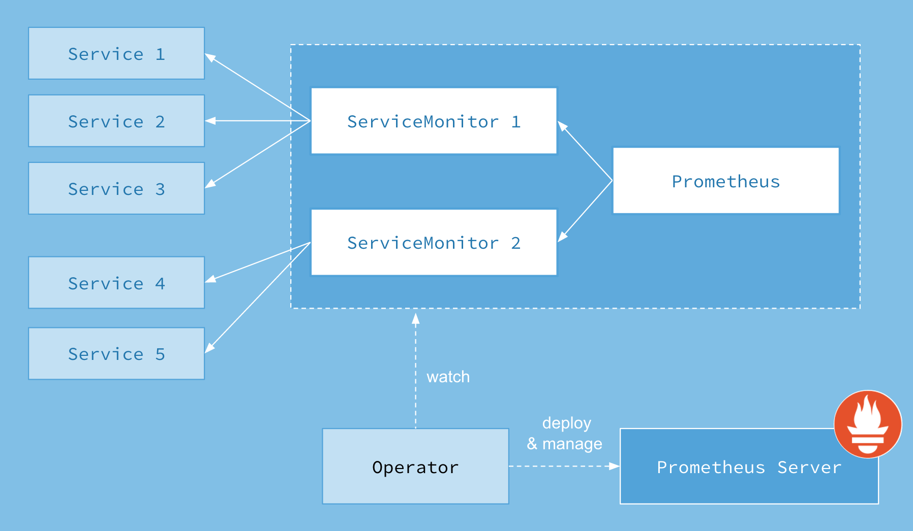

K8s监控
提到监控，Prometheus已经是事实上的标准。我们将应用部署到K8s中后，需要借助于Prometheus对K8s集群，容器（数据库、中间件、应用），机器的硬件等进行监控，配置一定的告警规则。
Promethues官方对K8s的监控进行了一定适配，首先了解一下K8s的基础概念。
基础概念
（1）CRD（Custom Resource Definition）
K8s采用的是一种声明式的编程方式，其基本的设计思想是，在K8s中一切都是资源，我们通过yaml/json的文件描述我们所需要的资源的预期的状态，然后通过一个资源控制器（Controller）在集群中采取各种措施（重启、杀掉重建、调度），不断趋向这种用户的预期状态，最终使实际情况达到用户预期。并时刻守护。
K8s提供了一些资源的实现，例如Pod、ConfigMap等。但这些资源描述还不能满足我们所有的需求，因此需要提供一种类似于插件扩展的机制，让用户自己定义并实现资源的描述。
（2）Operator
对于无状态的应用，我们可以通过Deployment这种控制器很容易地实现扩缩实例数量。但是对于一些有状态的服务，例如mysql、redis这样的有状态服务，实例的扩缩，往往需要进行状态的同步、数据的迁移，而这样的步骤是跟随着组件的不同需要定制化采取不同的步骤，常规的K8s控制器无法一一适配，所幸业界对于许多状态的服务进行了封装和开源，提供出来，供我们在K8s中使用。以本案的Promethues为例。

（3） Promethues-Operator VS Kube-Prometheus
对于K8s的监控，Promethues-Operator只能监控到部分数据，完整的监控能力要使用kube-prometheuses。
Kube-Prometheus
Github地址
基础介绍
Kube-Prometheus是Prometheus Operator对K8S监控的升级改装。
CRD资源介绍：
（1）Prometheus，定义了Prometheus的部署。
（2）AlertManager，定义了AlertManager的部署。
（3）ServiceMonitor，指定K8S中被监控的Service对象。Operator根据Service关联的endpoint中关联的Pod对象，自动生成Prometheus的scrape配置。
（4）PodMonitor，指定Pod对象，也会自动生成Prometheus的scrape配置。
（5）PrometheusRule，指定Prometheus的alert/record规则，Operator会自动将其转换为文件，提供给Promethues使用。
部署后通过下面命令查看
1 | kubectl get crd |grep coreos.com |
部署实践
kube-prometheus是一个K8S prometheus的监控包或者是库，是使用 jsonnet编写的。里面预置了一些对K8S组件的监控规则设定和一些dashboard、alert的规则，这些东西有很多是来自 kubernetes-mixin project这个项目。
用户可以通过修改代码库中的 jsonnet 文件，来定制化Kube-Prometheus。然后通过./build.sh example.jsonnet重新生成manifests下的yaml文件。
这里我们直接使用release的版本。
（1）本例的实验环境是Kubernetes 1.17的版本，所以只能选用release-0.4的版本
（2）Github下载release包，执行如下两条命令
1 | kubectl apply -f manifests/setup/ |
（3）修改prometheus、grafana、altermanager将对应的Service修改为NodePort，以便在集群外访问。
（4）卸载命令
1 | kubectl delete --ignore-not-found=true -f manifests/ -f manifests/setup |
Prometheus
通过梳理Kube Prometheus在K8S中通过CRD对Prometheus的实现，来实现几个常用的监控部署。
基本组件
Kube-Prometheus部署完成后，通过K8S的Pod查询命令来看一下一共有哪些Pod，各自承担的职责。
从Github的官方文档得知，Kube-Prometheus主要包括一下组件：
（1）高可用的Prometheus，对应图中prometheus-k8s-0/1
（2）高可用的AlertManager，对应图中alertmanager-main-0/1/2
（3）Prometheus Operator，负责Prometheus的扩缩容的控制器，对应图中prometheus-operator-xxxx
（4）Prometheus node-exporter，负责收集主机信息，对应图中node-exporter-xxxxx
（5）Prometheus Adapter for Kubernetes Metrics APIs，
从字面意思上可以看出是Kubernetes Metric APIs为了适配Promethues这类数据源所使用的适配器，详细内容我们在HPA一节中详解。
（6）Grafana，UI展示工具，可对接多种数据源，自行配置展示图表。
（7）Kube-state-metrics，也是K8S聚合API的一种实现，与Heapster、Metrics Server类似。

配置实践
监控K8S的存储ETCD
（1）查看ETCD的证书存放位置（/etc/kubernetes/pki/etcd），并将证书信息保存在K8S集群中，供后续Prometheus使用
1 | kubectl describe pod etcd-edu3.5-ha-1 -n kube-system |
（2）为Promethues设置ETCD的访问证书，增加如下两行，wq保存，并检查是否已经挂载进Prometheus中去。
1 | kubectl edit prometheus k8s -n monitoring |
（3）查看集群中ETCD的Service对象内容，根据label值创建ServiceMonitor对象，指向ETCD的Service。
1 | kubectl get svc etcd -n kube-system --show-labels |
1 | apiVersion: monitoring.coreos.com/v1 |
endpoints 属性下面可以配置很多抓取的参数，比如 relabel、proxyUrl，tlsConfig 表示用于配置抓取监控数据端点的 tls 认证，由于证书 serverName 和 etcd 中签发的可能不匹配，所以加上了 insecureSkipVerify=true
（4）查看Prometheus UI中的Target监控对象
Prometheus Operator 监控 etcd 集群
监控Spring Boot应用
应用启动在K8S中，Kube-Prometheus监控了Pod的资源情况，应用程序中的GVM、QPS等，需要应用内部通过端点暴露给Prometheus来抓取收集。在Spring Boot的技术栈中，Actuator实现了对应用内部数据的暴露。但是暴露出来的数据格式并不符合Prometheus的数据格式，我们需要借助于micrometer-registry-prometheus进行转换。
下面是Github上对于micrometer的说明：
An application metrics facade for the most popular monitoring tools. Instrument your code with dimensional metrics with a vendor neutral interface and decide on the monitoring backend at the last minute.
（1）使用micrometer转换actuator的监控数据
需要引入如下依赖，并在应用的配置文件暴露监控端点
1 | <dependency> |
1 | management: |
（2）使用micrometer自定义监控数据
实验代码清单：
1 |
|
启动服务后，访问/actuator/prometheus，搜索关键字beer_orders_total，如下图
其他类型指标编写方式，参考micrometer API或者是网上资料，这里仅仅是示意。
（3）配置Prometheus 的scrape任务
将上述应用打包部署到K8S中，定义ServiceMonitor对象，配置Prometheus的scrape任务。
1 | #ServiceMonitor清单文件 |
查看Prometheus UI中的监控对象
查看自定义监控指标
监控集群外部服务
假设我们在另一台服务器上有一个外部服务，在18080端口暴露了一些监控数据，我们可以通过http://10.6.6.207:18080/metrics拿到这些监控数据。
（1）为外部服务创建endpoints和service
1 | apiVersion: v1 |
查看是否创建成功
创建ServiceMonitor资源对象
1 | apiVersion: monitoring.coreos.com/v1 |
然后查看Prometheus UI页面
查看（http://10.6.6.207:18080/metrics）其中的指标，发现已经收集上来了。
告警规则配置
AlertManager
基础介绍
配置实践
Grafana
Grafana支持自定义仪表盘，或者从官网下载开源的仪表搭配方案，直接上载。